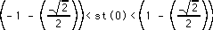
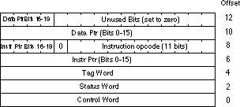

|
Table of Content | Chapter Fourteen (Part 6) |
|
Table of Content | Chapter Fourteen (Part 6) |
The 80x87 provides several instructions for comparing real
values. The fcom, fcomp, fcompp, fucom,
fucomp, and fucompp instructions compare the two values on the
top of stack and set the condition codes appropriately. The ftst instruction
compares the value on the top of stack with zero. The fxam instrution checks
the value on tos and reports sign, normalization, and tag information.
Generally, most programs test the condition code bits
immediately after a comparison. Unfortunately, there are no conditional jump instructions
that branch based on the FPU condition codes. Instead, you can use the fstsw
instruction to copy the floating point status register (see "The FPU Status
Register") into the ax register; then you can use the sahf
instruction to copy the ah register into the 80x86's condition code bits.
After doing this, you can can use the conditional jump instructions to test some
condition. This technique copies C0 into the carry flag, C2 into
the parity flag, and C3 into the zero flag. The sahf instruction
does not copy C1 into any of the 80x86's flag bits.
Since the sahf instruction does not copy any
80x87 processor status bits into the sign or overflow flags, you cannot use the jg,
jl, jge, or jle instructions. Instead, use the ja,
jae, jb, jbe, je, and jz
instructions when testing the results of a floating point comparison. Yes, these
conditional jumps normally test unsigned values and floating point numbers are signed
values. However, use the unsigned conditional branches anyway; the fstsw and sahf
instructions set the 80x86 flags register to use the unsigned jumps.
14.4.7.1 The FCOM, FCOMP, and FCOMPP Instructions
The fcom, fcomp, and fcompp
instructions compare st(0) to the specified operand and set the corresponding
80x87 condition code bits based on the result of the comparison. The legal forms for these
instructions are
fcom
fcomp
fcompp
fcom st(i)
fcomp st(i)
fcom mem
fcomp mem
With no operands, fcom, fcomp,
and fcompp compare st(0) against st(1) and set the
processor flags accordingly. In addition, fcomp pops st(0) off
the stack and fcompp pops both st(0) and st(1) off
the stack.
With a single register operand, fcom and fcomp
compare st(0) against the specified register. Fcomp also pops st(0)
after the comparison.
With a 32 or 64 bit memory operand, the fcom
and fcomp instructions convert the memory variable to an 80 bit extended
precision value and then compare st(0) against this value, setting the
condition code bits accordingly. Fcomp also pops st(0) after the
comparison.
These instructions set C2 (which winds up in
the parity flag) if the two operands are not comparable (e.g., NaN). If it is possible for
an illegal floating point value to wind up in a comparison, you should check the parity
flag for an error before checking the desired condition.
These instructions set the stack fault bit if there aren't
two items on the top of the register stack. They set the denormalized exception bit if
either or both operands are denormalized. They set the invalid operation flag if either or
both operands are quite NaNs. These instructions always clear the C1
condition code.
14.4.7.2 The FUCOM, FUCOMP, and FUCOMPP Instructions
These instructions are similar to the fcom, fcomp, and fcompp instructions, although they only allow the following forms:
fucom
fucomp
fucompp
fucom st(i)
fucomp st(i)
The difference between fcom/fcomp/fcompp and fucom/fucomp/fucompp is relatively minor. The fcom/fcomp/fcompp instructions set the invalid operation exception bit if you compare two NaNs. The fucom/fucomp/fucompp instructions do not. In all other cases, these two sets of instructions behave identically.
The ftst instruction compares the value in st(0)
against 0.0. It behaves just like the fcom instruction would if st(1)
contained 0.0. Note that this instruction does not differentiate -0.0 from +0.0. If the
value in st(0) is either of these values, ftst will set C3 to
denote equality. If you need to differentiate -0.0 from +0.0, use the fxam
instruction. Note that this instruction does not pop st(0) off the stack.
The fxam instruction examines the value in st(0)
and reports the results in the condition code bits (see "The FPU Status
Register" for details on how fxam sets these bits). This instruction does not pop st(0)
off the stack.
The 80x87 FPU provides several instructions that let you load commonly used constants onto the FPU's register stack. These instructions set the stack fault, invalid operation, and C1 flags if a stack overflow occurs; they do not otherwise affect the FPU flags. The specific instructions in this category include:
fldz ;Pushes +0.0.
fld1 ;Pushes +1.0.
fldp ;Pushes p.
fldl2t ;Pushes log2(10).
fldl2e ;Pushes log2(e).
fldlg2 ;Pushes log10(2).
fldln2 ;Pushes ln(2).
14.4.9 Transcendental Instructions
The 80387 and later FPUs provide eight transcendental (log and trigonometric) instructions to compute a partial tangent, partial arctangent, 2x-1, y * log2(x), and y * log2(x+1). Using various algebraic identities, it is easy to compute most of the other common transcendental functions using these instructions.
14.4.9.1 The F2XM1 Instruction
F2xm1
computes 2st(0)-1. The value in st(0)
must be in the range -1.0 st(0) +1.0. If st(0) is out of range f2xm1
generates an undefined result but raises no exceptions. The computed value replaces the
value in st(0). Example:
; Compute 10x using the identity: 10x = 2x*lg(10) (lg = log2).
fld x
fldl2t
fmul
f2xm1
fld1
fadd
Note that f2xm1 computes (2**x) - 1, which is
why the code above adds 1.0 to the result at the end of the computation.
14.4.9.2 The FSIN, FCOS, and FSINCOS Instructions
These instructions pop the value off the top of the
register stack and compute the sine, cosine, or both, and push the result(s) back onto the
stack. The fsincos pushes the sine followed by the cosine of the original
operand, hence it leaves cos(st(0)) in st(0) and sin(st(0))
in st(1).
These instructions assume st(0) specifies an
angle in radians and this angle must be in the range -2**63 < st(0) <
+2**63. If the original operand is out of range, these instructions set the C2
flag and leave st(0) unchanged. You can use the fprem1 instruction, with a
divisor of 2pi to reduce the operand to a reasonable range.
These instructions set the stack fault/C1,
precision, underflow, denormalized, and invalid operation flags according to the result of
the computation.
14.4.9.3 The FPTAN Instruction
Fptan
computes the tangent of st(0) and
pushes this value and then it pushes 1.0 onto the stack. Like the fsin and fcos
instructions, the value of st(0) is assumed to be in radians and must be in
the range -2**63<st(0)<+2**63. If the value is outside this range,
fptan sets C2 to indicate that the conversion did not take place. As with the
fsin, fcos, and fsincos instructions, you can use
the fprem1 instruction to reduce this operand to a reasonable range using a
divisor of 2pi.
If the argument is invalid (i.e., zero or pi radians,
which causes a division by zero) the result is undefined and this instruction raises no
exceptions. Fptan will set the stack fault, precision, underflow, denormal,
invalid operation, C2, and C1 bits as required by the operation.
14.4.9.4 The FPATAN Instruction
This instruction expects two values on the top of stack. It pops them and computes the following:
st(0) = tan-1( st(1) / st(0) )
The resulting value is the arctangent of the ratio on the
stack expressed in radians. If you have a value you wish to compute the tangent of, use fld1
to create the appropriate ratio and then execute the fpatan instruction.
This instruction affects the stack fault/C1,
precision, underflow, denormal, and invalid operation bits if an problem occurs during the
computation. It sets the C1 condition code bit if it has to round the result.
14.4.9.5 The FYL2X and FYL2XP1 Instructions
The fyl2x and fyl2xp1
instructions compute st(1) * log2(st(0)) and st(1)
* log2(st(0)+1), respectively. Fyl2x requires that st(0)
be greater than zero, fyl2xp1 requires st(0) to be in the range:

Fyl2x
is useful for computing logs to bases other
than two; fyl2xp1 is useful for computing compound interest, maintaining the
maximum precision during computation.
Fyl2x can affect all the exception flags. C1
denotes rounding if there is not other error, stack overflow/underflow if the stack fault
bit is set.
The fyl2xp1 instruction does not affect the
overflow or zero divide exception flags. These exceptions occur when st(0) is
very small or zero. Since fyl2xp1 adds one to st(0) before
computing the function, this condition never holds. Fyl2xp1 affects the other
flags in a manner identical to fyl2x.
14.4.10 Miscellaneous instructions
The 80x87 FPU includes several additional instructions
which control the FPU, synchronize operations, and let you test or set various status
bits. These instructions include finit/fninit, fdisi/fndisi, feni/fneni, fldcw,
fstcw/fnstcw, fclex/fnclex, fsave/fnsave, frstor, frstpm, fstsw/fnstsw, fstenv/fnstenv,
fldenv, fincstp, fdecstp, fwait, fnop, and ffree. The fdisi/fndisi,
feni/fneni, and frstpm are active only on FPUs earlier than the 80387,
so we will not consider them here.
Many of these instructions have two forms. The first form
is Fxxxx and the second form is FNxxxx. The version without the "N" emits an fwait
instruction prior to opcode (which is standard for most coprocessor instructions). The
version with the "N" does not emit the fwait opcode ("N"
stands for no wait).
14.4.10.1 The FINIT and FNINIT Instructions
The finit instruction intializes the FPU for
proper operation. Your applications should execute this instruction before executing any
other FPU instructions. This instruction initializes the control register to 37Fh (see
"The FPU Control Register"), the status register to zero (see "The FPU
Status Register") and the tag word to 0FFFFh. The other registers are unaffected.
14.4.10.2 The FWAIT Instruction
The fwait instruction pauses the system until
any currently executing FPU instruction completes. This is required because the FPU on the
80486sx and earlier CPU/FPU combinations can execute instructions in parallel with the
CPU. Therefore, any FPU instruction which reads or writes memory could suffer from a data
hazard if the main CPU accesses that same memory location before the FPU reads or writes
that location. The fwait instruction lets you synchronize the operation of
the FPU by waiting until the completion of the current FPU instruction. This resolves the
data hazard by, effectively, inserting an explict "stall" into the execution
stream.
14.4.10.3 The FLDCW and FSTCW Instructions
The fldcw and fstcw instructions
require a single 16 bit memory operand:
fldcw mem_16
fstcw mem_16
These two instructions load the control register (see
"The FPU Control Register") from a memory location (fldcw) or store
the control word to a 16 bit memory location (fstcw).
When using the fldcw instruction to turn on
one of the exceptions, if the corresponding exception flag is set when you enable that
exception, the FPU will generate an immediate interrupt before the CPU executes the next
instruction. Therefore, you should use the fclex instruction to clear any pending
interrupts before changing the FPU exception enable bits.
14.4.10.4 The FCLEX and FNCLEX Instructions
The fclex and fnclex instructions
clear all exception bits the stack fault bit, and the busy flag in the FPU status register
(see "The FPU Status Register").
14.4.10.5 The FLDENV, FSTENV, and FNSTENV Instructions
fstenv mem_14b
fnstenv mem_14b
fldenv mem_14b
The fstenv/fnstenv instructions store a
14-byte FPU environment record to the memory operand specified. When operating in real
mode (the only mode this text considers), the environment record takes the form:

You must execute the fstenv and fnstenv
instructions with the CPU interrupts disabled. Furthermore, you should always ensure that
the FPU is not busy before executing this instruction. This is easily accomplished by
using the following code:
pushf ;Preserve I flag.
cli ;Disable interrupts.
fstenv mem_14b ;Implicit wait for not busy.
fwait ;Wait for operation to finish.
popf ;Restore I flag.
The fldenv instruction loads the FPU
environment from the specified memory operand. Note that this instruction lets you load
the the status word. There is no explicit instruction like fldcw to
accomplish this.
14.4.10.6 The FSAVE, FNSAVE, and FRSTOR Instructions
fsave mem_94b
fnsave mem_94b
frstor mem_94b
These instructions save and restore the state of the FPU.
This includes saving all the internal control, status, and data registers. The destination
location for fsave/fnsave (source location for frstor) must be
94 bytes long. The first 14 bytes correspond to the environment record the fldenv
and fstenv instructions use; the remaining 80 bytes hold the data from the
FPU register stack written out as st(0) through st(7). Frstor
reloads the environment record and floating point registers from the specified memory
operand.
The fsave/fnsave and frstor
instructions are mainly intended for task switching. You can also use fsave/fnsave
and frstor as a "push all" and "pop all" sequence to
preserve the state of the FPU.
Like the fstenv and fldenv
instructions, interrupts should be disabled while saving or restoring the FPU state.
Otherwise another interrupt service routine could manipulate the FPU registers and
invalidate the operation of the fsave/fnsave or frestore
operation. The following code properly protects the environment data while saving and
restore the FPU status:
; Preserve the FPU state, assume di points at the environment
; record in memory.
pushf
cli
fsave [si]
fwait
popf
.
.
.
pushf
cli
frstor [si]
fwait
popf
14.4.10.7 The FSTSW and FNSTSW Instructions
fstsw ax
fnstsw ax
fstsw mem_16
fnstsw mem_16
These instructions store the FPU status register (see
"The FPU Status Register") into a 16 bit memory location or the ax
register. These instructions are unusual in the sense that they can copy an FPU value into
one of the 80x86 general purpose registers. Of course, the whole purpose behind allowing
the transfer of the status register into ax is to allow the CPU to easily test the
condition code register with the sahf instruction.
14.4.10.8 The FINCSTP and FDECSTP Instructions
The fincstp and fdecstp
instructions do not take any operands. They simply increment and decrement the stack
pointer bits (mod 8) in the FPU status register. These two instructions clear the C1 flag,
but do not otherwise affect the condition code bits in the FPU status register.
14.4.10.9 The FNOP Instruction
The fnop instruction is simply an alias for fst
st, st(0). It performs no other operation on the FPU.
14.4.10.10 The FFREE Instruction
ffree st(i)
This instruction modifies the tag bits for register i in the tags register to mark the specified register as emtpy. The value is unaffected by this instruction, but the FPU will no longer be able to access that data (without resetting the appropriate tag bits).
The 80x87 FPUs provide special instructions that combine integer to extended precision conversion along with various arithmetic and comparison operations. These instructions are the following:
fiadd int
fisub int
fisubr int
fimul int
fidiv int
fidivr int
ficom int
ficomp int
These instructions convert their 16 or 32 bit integer operands to an 80 bit extended precision floating point value and then use this value as the source operand for the specified operation. These instructions use st(0) as the destination operand.
|
Table of Content | Chapter Fourteen (Part 6) |
Chapter Fourteen: Floating Point
Arithmetics (Part 5)
28 SEP 1996